Chapter 4 · Part 2 — Cave Kids
“Let’s explore the cave before they come home,” said Jack.
“It’s too dark in the back,” said Annie. “We won’t be able to see anything.”
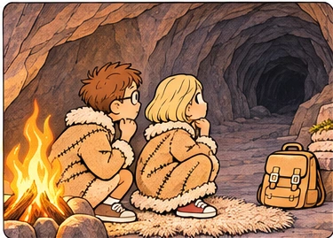
“I’ll find out how Cro-Magnons saw in the dark,” said Jack.
He opened the Ice Age book. He found a picture of cave people holding odd-looking lamps. He read aloud to Annie:
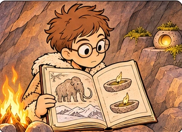
Cro-Magnons made stone lamps. They hollowed out a rock, filled it with animal fat, then burned a wick made from moss.
“There!” said Annie. She pointed to two stones near the fire. In the hollow of each was gooey white stuff and a pile of moss.
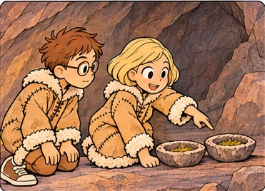
“We have to be careful,” said Jack.
He picked up one stone. It was smaller than a soup bowl, but much heavier.
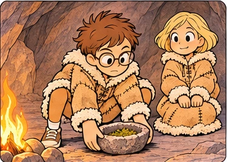
Jack held the stone close to the fire and lit the piece of moss.
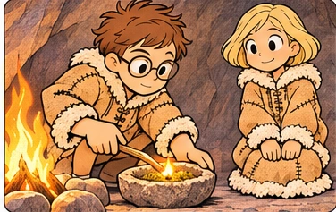
He lit another lamp and gave it to Annie.
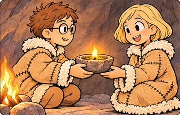
“Carry it with two hands,” he said.
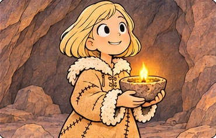
“I know,” she said.
Jack tucked the book under his arm. He and Annie carried their stone lamps to the back of the cave.
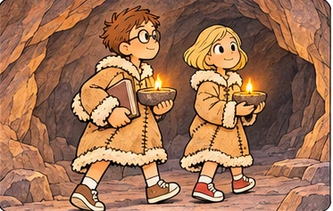
“Hey, I wonder where this goes,” said Annie. She held her lamp up to an opening in the wall.
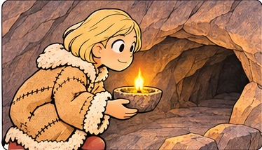
“I’ll check in the book,” said Jack.
He put down his lamp and flipped through the Ice Age book.
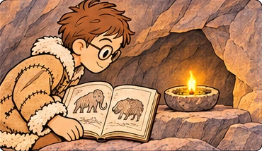
“I think it’s a tunnel,” she said. “Be right back.”
“Wait a second,” said Jack.
Too late—she had squeezed into the opening and was gone.
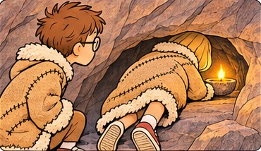
“Oh brother,” said Jack, sighing.
He closed his book and peeked into the opening.
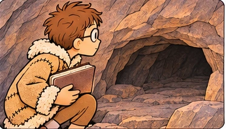
“Come back here!” he said.
“No! You come here! ” said Annie. Her voice sounded far away. “You won’t believe this!”
Jack picked up his lamp and book. He ducked into a small tunnel.
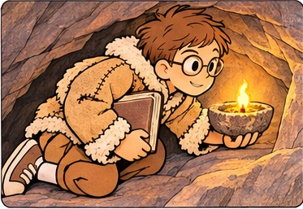
“Wow!” came Annie’s voice.
Jack could see her lamp flickering at the other end.
Crouching clown, he hurried toward her. At the end of the tunnel was a huge cavern with a high ceiling.
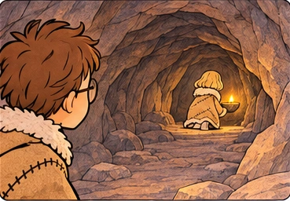
Annie held her lamp close to the wall.
“Look,” she said. Her voice echoed.
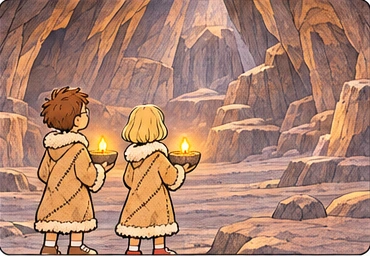
Animals were painted on the wall in strokes of red and black and yellow.
There were cave bears and lions, elk and , bison and woolly rhinos and mammoths.
In the flickering light, the prehistoric beasts looked alive.
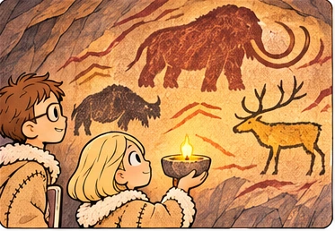